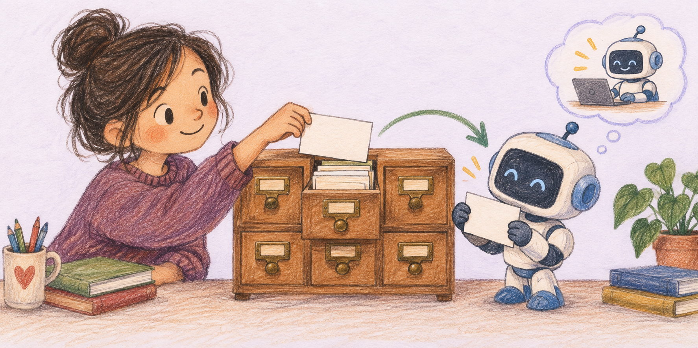
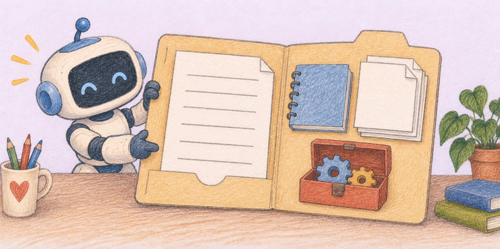
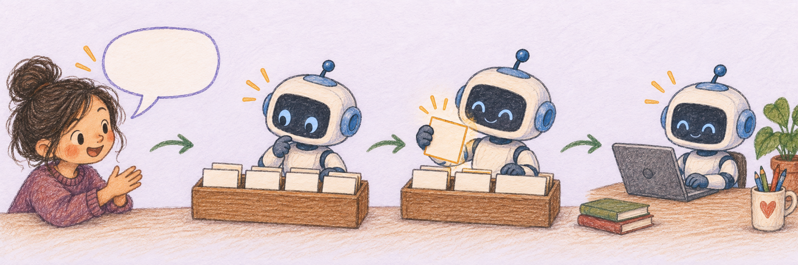

숫자가 나오면 믿을 만한 출처부터 확인해 줘.
AI Skills · 다시 쓰는 업무 설명서
매번 다시 말하지 않게
AI에게 일하는 방법을 적어두세요
스킬은 “이런 일을 부탁받으면, 이 순서와 기준으로 처리해”라고 적어 둔 재사용 설명서입니다. 일이 시작되면 AI가 필요한 설명서를 읽고 그 방식대로 움직입니다.

같은 부탁 뒤에
같은 설명이 따라붙습니다
발표자료를 만들 때마다 글꼴, 분량, 출처, 검수 방법을 다시 말하면 길어지고 빠뜨리기 쉽습니다. 반복되는 설명을 스킬로 묶어 두면 요청은 짧아지고 결과의 기준은 일정해집니다.
한 장에는 중요한 메시지 하나만 남겨 줘.
완성한 뒤 화면이 깨지지 않았는지 직접 확인해 줘.
같은 규칙을 여러 번 설명하고 있다면, 스킬로 만들기 좋은 일입니다.
중심은 글로 쓴 설명서,
필요하면 도구 상자도 붙습니다
스킬은 폴더 하나입니다. 꼭 필요한 것은 이름, 언제 쓸지, 어떻게 일할지를 적은 SKILL.md입니다. 작업에 따라 참고자료, 서식, 이미지, 실행 스크립트를 함께 둘 수 있습니다.

SKILL.md핵심 설명서 · 필수
references참고자료 · 선택
assets서식과 재료 · 선택
scripts반복 실행 · 선택
먼저 짧은 소개를 보고,
맞는 스킬만 펼쳐 읽습니다
Codex는 처음부터 모든 스킬의 긴 본문을 읽지 않습니다. 먼저 설치된 스킬의 이름과 설명을 보고, 사용자의 요청과 맞는 스킬을 골랐을 때 그 스킬의 SKILL.md와 필요한 자료를 읽습니다.

사용자 요청하고 싶은 일
설명 확인어떤 스킬이 맞나
한 개 펼치기전체 지침 읽기
작업 수행정해 둔 방식 적용
두 가지로 부르고,
필요하면 빼달라고 말합니다
평소처럼 일을 부탁합니다
요청이 스킬의 설명과 잘 맞으면 Codex가 알맞은 스킬을 고를 수 있습니다.
예: “MCP를 초보자용 그림 설명서로 만들어줘.”
$스킬이름으로 부릅니다
이번 작업에 특정 스킬을 꼭 쓰고 싶다면 이름을 직접 적습니다.
예: $eli5 스킬이 무엇인지 설명해줘
쓰지 말라고 분명히 말합니다
간단한 초안만 필요하거나 특정 방식이 맞지 않을 때는 제외할 수 있습니다.
예: “이번에는 스킬 없이 글만 빠르게 써줘.”
좋은 스킬은 넓지 않고,
판단할 수 있게 씁니다
잘 꺼내지게 만들기
- 한 스킬에는 한 가지 일을 담습니다.
- 설명에 실제로 쓰는 요청 표현을 넣습니다.
- 언제 쓰고 언제 쓰지 않을지 범위를 적습니다.
결과가 달라지게 만들기
- “예쁘게”보다 확인 가능한 기준을 적습니다.
- 입력, 작업 순서, 최종 결과를 분명히 씁니다.
- 필요한 검수 방법과 멈출 조건을 넣습니다.
같은 요구를 세 번째 설명하고 있다면 “이 규칙을 스킬로 만들어줘”라고 부탁해도 좋습니다.
스킬 하나가
한 가지 전문 역할을 맡습니다
$eli5
어려운 개념을 그림 설명서로
자료를 확인하고, 초보자가 읽기 쉬운 HTML 설명서로 정리합니다.
$handdrawn-ppt
손그림 발표자료 만들기
캐릭터와 손그림 화풍을 맞춘 PPT나 카드뉴스를 제작합니다.
$notebooklm
여러 자료를 한곳에서 다루기
출처를 모아 요약하고 오디오 같은 학습 자료를 만듭니다.
$openai-docs
공식 OpenAI 문서부터 확인하기
Codex나 OpenAI 기능을 설명할 때 최신 공식 자료를 먼저 찾습니다.
스킬은 AI에게 모든 것을 새로 가르치는 기능이 아니라,
필요한 순간에 내 업무 설명서를 꺼내 읽게 하는 방법입니다.